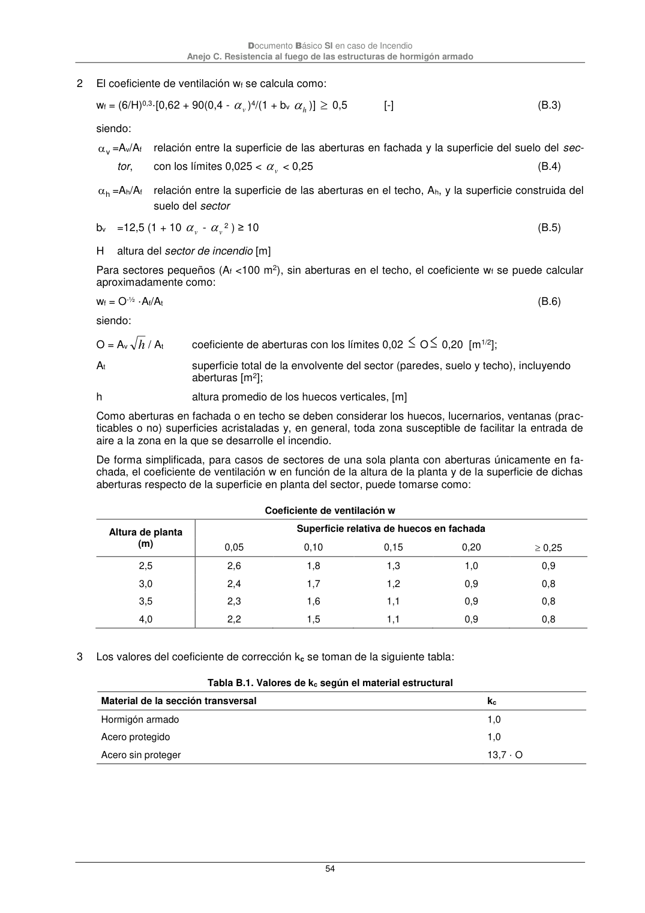

DB-SI · coeficiente de aberturas con los límites 0,02 O 0,20 [m1/2]; · versión 2025-03-04 · capa oficial
Formatos: JSON compacto · Markdown · PDF fuente
Ámbito del documento · texto del ámbito · documento y tablas
ID técnico a0147 · PDF pág. 54-55 · jerarquía no validada por persona · contrastado con el literal de la página 54 (candidato tipográfico); no validado por persona · padre: a0146
coeficiente de aberturas con los límites 0,02 O 0,20 [m1/2]; At superficie total de la envolvente del sector (paredes, suelo y techo), incluyendo aberturas [m2]; h altura promedio de los huecos verticales, [m] Como aberturas en fachada o en techo se deben considerar los huecos, lucernarios, ventanas (prac- ticables o no) superficies acristaladas y, en general, toda zona susceptible de facilitar la entrada de aire a la zona en la que se desarrolle el incendio. De forma simplificada, para casos de sectores de una sola planta con aberturas únicamente en fa- chada, el coeficiente de ventilación w en función de la altura de la planta y de la superficie de dichas aberturas respecto de la superficie en planta del sector, puede tomarse como: Coeficiente de ventilación w Altura de planta (m) Superficie relativa de huecos en fachada 0,05 0,10 0,15 0,20 0,25 2,5 2,6 1,8 1,3 1,0 0,9 3,0 2,4 1,7 1,2 0,9 0,8 3,5 2,3 1,6 1,1 0,9 0,8 4,0 2,2 1,5 1,1 0,9 0,8 3 Los valores del coeficiente de corrección kc se toman de la siguiente tabla: Tabla B.1. Valores de kc según el material estructural Material de la sección transversal kc Hormigón armado 1,0 Acero protegido 1,0 Acero sin proteger 13,7 · O Documento Básico SI en caso de Incendio Anejo C. Resistencia al fuego de las estructuras de hormigón armado 55

PDF fuente redistribuible: copia fiel enlazada en esta página (SHA256 verificado).